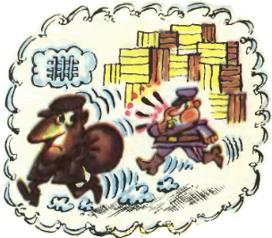

Задача 9.1. [возможно, второй вопрос у начинающих можно убрать] В клеточки рисунка впишите все десять цифр так, чтобы по горизонталям получились четыре квадрата натуральных чисел. Сколько существует способов это сделать?
Задача 9.2. В трамвае ехали 60 человек: контролёры, кондукторы, лжекондукторы (граждане, выдававшие себя за кондукторов), лжеконтролёры (граждане, выдававшие себя за контролёров), и, возможно, обычные пассажиры. Общее количество лжеконтролёров и лжекондукторов в 4 раза меньше числа настоящих кондукторов и контролёров. Общее число контролёров и лжеконтролёров в 7 раз больше общего числа кондукторов и лжекондукторов. Сколько в трамвае было обычных пассажиров?
Задача 9.3. В ста ящиках было по одинаковому количеству деталей. Когда из первого ящика взяли несколько деталей, из второго в два раза больше, из третьего в три раза больше и так далее, то в последнем ящике осталась одна деталь, а во всех ста вместе — 14950. Сколько деталей было в каждом ящике первоначально?
Задача 9.4. Был жаркий день, и четыре супружеские пары, гуляя, выпили в течение дня 44 стакана лимонада. Анна выпила 2 стакана, Мария — 3,Софья — 4, Дарья — 5. Андреев выпил столько же, сколько и его жена; Борисов выпил стаканов вдвое больше, чем его жена; Васильев — втрое больше своей жены, а Груздев выпил стаканов лимонада в четыре раза больше, чем его жена. Кто на ком женат?
Задача 9.5. Петя проснулся в восьмом часу утра и заметил, что часовая стрелка его будильника делит пополам угол между минутной стрелкой и стрелкой звонка, показывающей на цифру 8. Через какое время должен прозвенеть будильник?
Задача 9.6. Придумайте натуральное число, делящееся на 14, с как можно меньшей суммой цифр.
Задача 9.7. Раскрасьте клетки доски 7 × 7 в синий и красный цвета так, чтобы в любом квадрате 3 × 3 синих клеток было на одну больше, чем красных.
Задача 9.8. Использовав каждую из цифр от 0 до 9 ровно по разу, запишите 5 ненулевых чисел так, чтобы каждое делилось на предыдущее.
Задача 9.9. В первой строке таблицы записаны подряд все числа от 1 до 9. Заполните вторую строку этой таблицы теми же числами от 1 до 9 в каком-нибудь порядке так, чтобы сумма двух чисел в каждом столбце оказалась точным квадратом.
Задача 9.10. В вершинах правильного девятиугольника расставьте числа 1, 2, 3, 4, 5, 6, 7, 8, 9, после чего на каждой диагонали пишут произведение чисел, стоящих на её концах. Расставьте числа в вершинах так, чтобы все числа на диагоналях были разные.
Задача 9.11. На длинной ленте написаны цифры 201820182018…. Вася вырезал ножницами два куска ленты и составил из них положительное число, которое делится на 72. Приведите пример таких кусков и запишите число, составленное из них.
Задача 9.12. Даны 19 карточек. На каждой карточке напишите ненулевую цифру так, чтобы из этих карточек можно было сложить ровно одно 19-значное число, кратное на 11.
Задача 9.13. На пальме сидело много мартышек. Вдруг 20 из них получили по пинку. Пнутая мартышка срывает с пальмы 3 финика и раздает подружкам. Мартышка, получившая 2 финика, съедает их и пинает другую мартышку. После того как произошло 30 новых пинков, мартышки успокоились. Сколько фиников осталось у мартышек?
Задача 9.14. В ребусе ИДЕЯ - ЛЕНЬ = ДЕЛО одинаковые буквы обозначают одинаковые цифры, а разные буквы — разные цифры. Найдите решение этого ребуса, при котором ЛЕНЬ наименьшая.
Задача 9.15. Мальчики шестого класса принесли на весенний бал по букету из 7 тюльпанов. Так как на всех одноклассниц букетов не хватило, они составили новые букеты по 5 тюльпанов и подарили их все девочкам и классной руководительнице, по одному каждой. Сколько девочек в этом классе, если всего учеников в нем больше, чем 20, но меньше, чем 30?
Задача 9.16. Сколькими способами можно из клетчатого квадрата 4 × 4 (жестко закрепленного) вырезать по линиям сетки пять уголков из трех клеток?
Задача 9.17. Астролог считает год удачным, если сумма первой и третьей цифры в его номе-ре равна сумме второй и четвёртой. Например, 2013 год был удачным. Сколько удачных лет в 3-м тысячелетии?
Задача 9.18. В двух коробках 130 книг. В одной из них 2/19 не по математике, а в другой 5/9 с синей обложкой. (Все книги целые!) Сколько книг в каждой из коробок?
Задача 9.19. [в оригинале было 2018, так что надо проверить, есть ли решение] Расставьте знаки действий и скобки, чтобы равенство стало верным: 1 2 3 4 5 6 7 8 9 1 0 = 2018.
Задача 9.20. Три брата вернулись с рыбалки. Мама спросила у каждого, сколько они вместе поймали рыб. Вася сказал: “Больше десяти”, Петя: “Больше восемнадцати”, Коля: “Больше пятнадцати”. Сколько могло быть поймано рыб (укажите все возможности), если известно, что два брата сказали правду, а третий – неправду?